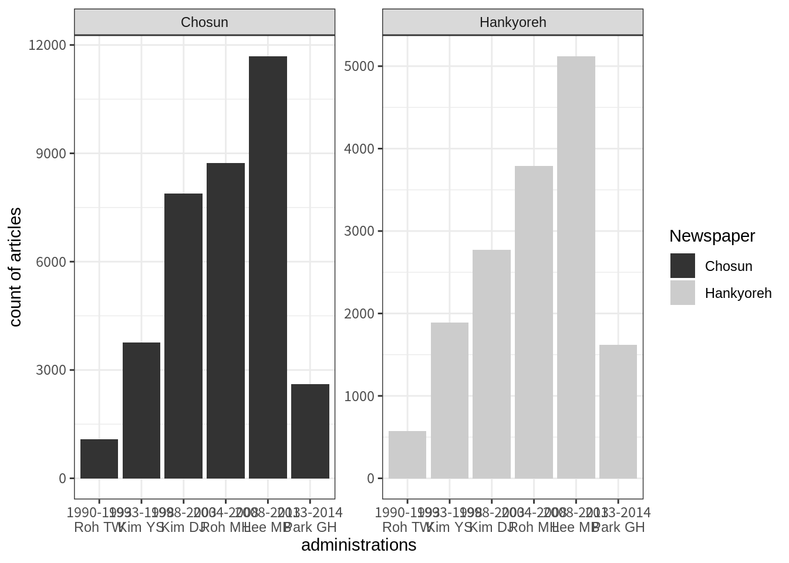
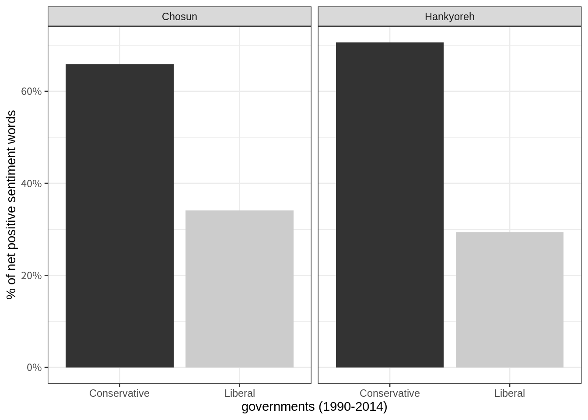
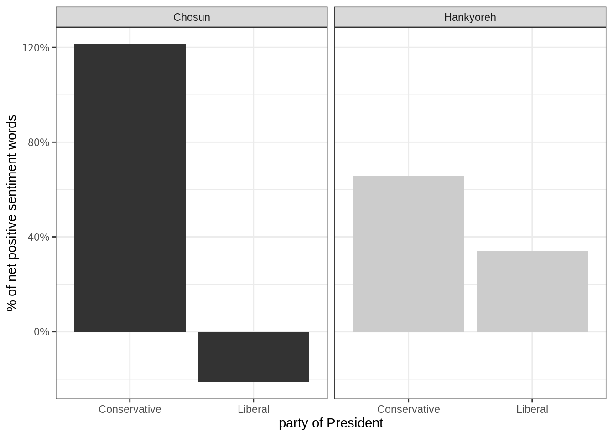
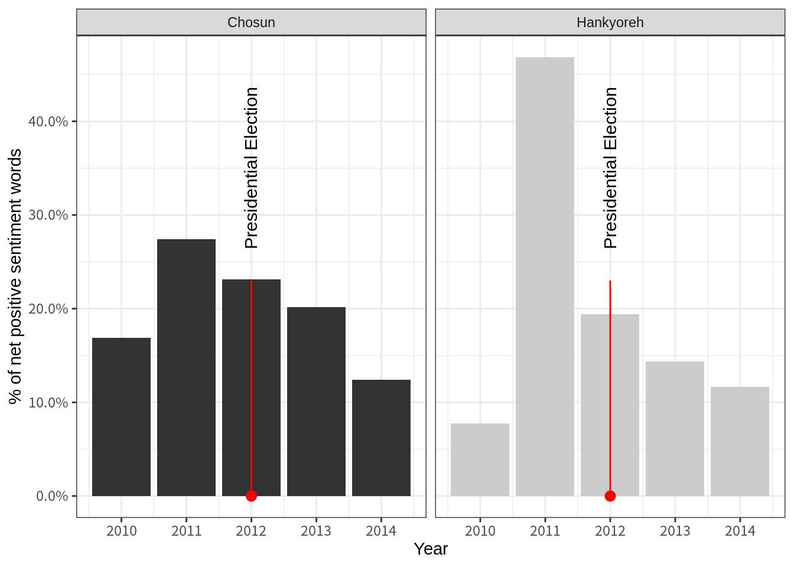
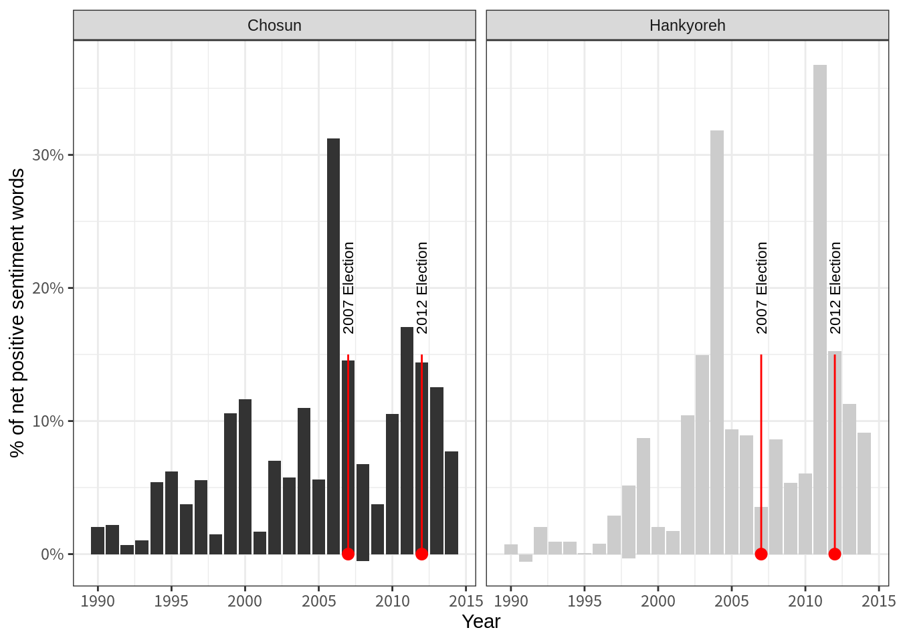
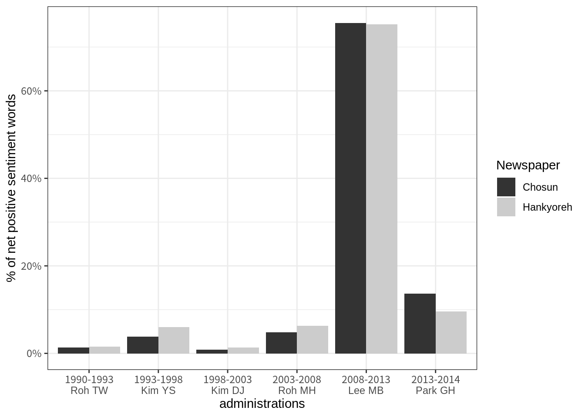
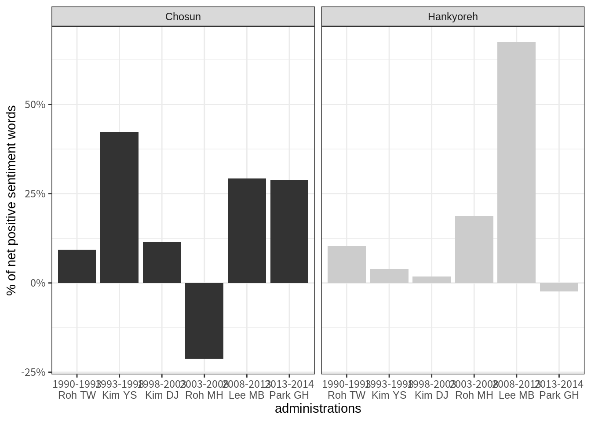

<<<<<<< HEAD
Chapter 5: Framing Welfare
Online Appendix
=======My Website
>>>>>>> 206c52833a0e7671a4f73f0cb421be8270593253Hello, Website!
<<<<<<< HEADsetwd("~/Dropbox/0 MYCOMP/0_Book manuscript/Lexington/klarahan.github.io")
library(lubridate)
library(ggplot2)
library(dplyr)
library(tidytext)
#library(tidystm) Prepare data
# chosun <- readxl::read_xls("data/all_issues.xls",
# sheet = "Chosun_복지") %>%
# mutate(Newspaper = "Chosun") %>%
# mutate(Date = ymd(Date))
# chosun$Body <- chosun$Body %>%
# gsub("<.*?>", " ", ., perl = TRUE) %>%
# gsub("[^ㄱ-ㅎ|ㅏ-ㅣ|가-힣]", " ", ., perl = TRUE) %>%
# gsub("....기자|....특파원", " ", ., perl = TRUE)%>%
# gsub("종이신문보기", " ", ., perl = TRUE) %>%
# stringr::str_squish()
#
# hani <- bind_rows(readxl::read_xls("data/all_issues.xls",
# sheet = "Hani_복지")) %>%
# mutate(Newspaper = "Hankyoreh") %>%
# mutate(Date = ymd(Date)) %>%
# arrange(Date)
# hani$Body <- hani$Body %>%
# gsub("<.*?>", " ", ., perl = TRUE) %>%
# gsub("[^ㄱ-ㅎ|ㅏ-ㅣ|가-힣]", " ", ., perl = TRUE) %>%
# gsub("....기자|....특파원", " ", ., perl = TRUE) %>%
# stringr::str_squish()
#
# hankook <- bind_rows(readxl::read_xls("data/all_issues.xls", sheet = "Hangook_복지")) %>%
# mutate(Newspaper = "Hankook") %>%
# mutate(Date = ymd(Date)) %>%
# arrange(Date)
#
# all_news <- bind_rows(chosun, hani) %>%
# mutate(Government = case_when(Date >= "1990-01-01" & Date <= "1993-02-24" ~ "1990-1993 Roh TW",
# Date >= "1993-02-25" & Date <= "1998-02-24" ~ "1993-1998 Kim YS",
# Date >= "1998-02-25" & Date <= "2003-02-24" ~ "1998-2003 Kim DJ",
# Date >= "2003-02-25" & Date <= "2008-02-24" ~ "2003-2008 Roh MH",
# Date >= "2008-02-25" & Date <= "2013-02-24" ~ "2008-2013 Lee MB",
# Date >= "2013-02-25" & Date <= "2014-12-31" ~ "2013-2014 Park GH")) %>%
# mutate(Prezparty = case_when(Date >= "1990-01-01" & Date <= "1993-02-24" ~ "Conservative",
# Date >= "1993-02-25" & Date <= "1998-02-24" ~ "Conservative",
# Date >= "1998-02-25" & Date <= "2003-02-24" ~ "Liberal",
# Date >= "2003-02-25" & Date <= "2008-02-24" ~ "Liberal",
# Date >= "2008-02-25" & Date <= "2013-02-24" ~ "Conservative",
# Date >= "2013-02-25" & Date <= "2014-12-31" ~ "Conservative"))
# rm(chosun, hani)
#
# all_news %>%
# filter(stringr::str_detect(Title, "스모그"))
#
# hankook %>%
# filter(stringr::str_detect(Title, "쓰레기처럼 버려지는 공동체의식"))Load processed data
# saveRDS(all_news, "data/welfare_news.RDS")
all_news <- readRDS("data/welfare_news.RDS")Count of all articles
all_news %>%
count(Newspaper, Government) %>%
ggplot(aes(Government, n, fill = Newspaper)) +
geom_col(position = "dodge") +
labs(x = "administrations", y = "count of articles") +
facet_wrap(~Newspaper, ncol = 2, scales = "free_y") +
scale_fill_grey() +
theme_bw() +
scale_x_discrete(labels = shortgov)
Save stopwords
# save legit stopwords, and add some
stopwords <- tibble(
tokens = stopwords::stopwords("ko", source = "stopwords-iso"),
lexicon = "stopwords-iso")
stopwords <- stopwords %>%
add_row(tokens = c("들이", "하기", "그것", "때문", "것으로", "있는", "위해",
"대한", "등을", "했다", "말했다", "만원", "한다", "지난",
"것은"," 것이", "위한", "것이다", "하는", "있는", "이라고",
"이날", "밝혔다", "오후", "통해", "대해", "그는", "나는",
"것이", "없다", "같은", "내가", "있었다", "경우", "등이",
"그는", "지음", "우리는", "아니라", "없는", "것을", "씨는",
"억원", "당시", "지난해", "현재", "이에", "관련", "하고",
"그런", "그의", "가장", "많은", "있습니다", "일까지", "오는",
"일부터", "오전", "가운데", "다시", "라는", "모든", "라고",
"그가", "세기", "것도", "이를", "있다는", "특히", "이어",
"자신의", "때문이다", "많이", "않고", "새로운", "합니다",
"된다", "등의", "이렇게", "아니다", "지금", "보면", "있을",
"우리가", "사람들이", "이제", "있어", "연다", "최근",
"계획이다", "올해", "이후"),
lexicon = "stopwords-iso") %>%
rename(word = tokens)Korean sentiment lexicon
## Parsed with column specification:
## cols(
## term = col_character()
## )
## Parsed with column specification:
## cols(
## term = col_character()
## )tidy_news <- all_news %>%
dplyr::mutate(article = row_number()) %>%
tidytext::unnest_tokens(word, Body) %>%
dplyr::anti_join(stopwords)## Joining, by = "word"tidy_news %>%
inner_join(senti) %>%
count(word, sort = TRUE) ## Joining, by = "word"Count the emotional words
senti_news <- tidy_news %>%
inner_join(senti) %>%
count(Newspaper, Prezparty, sentiment) %>%
tidyr::spread(sentiment, n, fill = 0) %>%
mutate(sentiment = positive - negative) %>%
group_by(Newspaper, Prezparty) %>%
summarise(m = mean(sentiment)) %>%
mutate(density = m/sum(m)) ## Joining, by = "word"ggplot(senti_news, aes(Prezparty, density, fill = Prezparty)) +
geom_col(show.legend = FALSE) +
labs(x = "governments (1990-2014)", y = "% of net positive sentiment words") +
facet_wrap(~Newspaper, ncol = 2) +
scale_fill_grey() +
theme_bw() +
scale_y_continuous(labels = scales::percent)
Did negativity increase in specific administrations?
senti_news_admin <- tidy_news %>%
inner_join(senti) %>%
count(Newspaper, Government, sentiment) %>%
tidyr::spread(sentiment, n, fill = 0) %>%
mutate(sentiment = positive - negative) %>%
group_by(Newspaper, Government) %>%
summarise(m = mean(sentiment)) %>%
mutate(density = m/sum(m)) ## Joining, by = "word"shortgov <- c("1990-1993\nRoh TW", "1993-1998\nKim YS", "1998-2003\nKim DJ", "2003-2008\nRoh MH", "2008-2013\nLee MB", "2013-2014\nPark GH")
ggplot(senti_news_admin, aes(Government, density, fill = Newspaper)) +
geom_col(position = "dodge") +
labs(x = "administrations", y = "% of net positive sentiment words") +
# facet_wrap(~Newspaper, ncol = 1, scales = "free_y") +
scale_fill_grey() +
theme_bw() +
scale_y_continuous(labels = scales::percent) +
scale_x_discrete(labels = shortgov)
Sentiment in articles that contain keyword “National Parliament”
all_news %>%
filter(stringr::str_detect(Body, "국회")) %>%
dplyr::mutate(article = row_number()) %>%
tidytext::unnest_tokens(word, Body) %>%
dplyr::anti_join(stopwords) %>%
inner_join(senti) %>%
count(Newspaper, Prezparty, Government, sentiment) %>%
tidyr::spread(sentiment, n, fill = 0) %>%
mutate(sentiment = positive - negative) %>%
group_by(Newspaper, Prezparty) %>%
summarise(m = mean(sentiment)) %>%
mutate(density = m/sum(m)) %>%
ggplot(aes(Prezparty, density, fill = Newspaper)) +
geom_col(position = "dodge", show.legend = FALSE) +
labs(x = "party of President", y = "% of net positive sentiment words") +
facet_wrap(~Newspaper, ncol = 2) +
scale_fill_grey() +
theme_bw() +
scale_y_continuous(labels = scales::percent) ## Joining, by = "word"
## Joining, by = "word"
Sentiments in articles that contain keyword “Taxes”
all_news %>%
filter(stringr::str_detect(Body, "세금")) %>%
filter(Date >= "2010-01-01" & Date <= "2014-12-31") %>%
mutate(Year = year(Date)) %>%
dplyr::mutate(article = row_number()) %>%
tidytext::unnest_tokens(word, Body) %>%
dplyr::anti_join(stopwords) %>%
inner_join(senti) %>%
count(Newspaper, Prezparty, Year, sentiment) %>%
tidyr::spread(sentiment, n, fill = 0) %>%
mutate(sentiment = positive - negative) %>%
group_by(Newspaper, Prezparty, Year) %>%
summarise(m = mean(sentiment)) %>%
mutate(density = m/sum(m)) %>%
ggplot(aes(Year, density, fill = Newspaper)) +
geom_col(position = "dodge", show.legend = FALSE) +
labs(x = "Year", y = "% of net positive sentiment words") +
facet_wrap(~Newspaper, ncol = 2) +
scale_fill_grey() +
theme_bw() +
annotate("text", x = 2012, label = "Presidential Election",
y = 0.35, size = 4, angle = 90) +
annotate("pointrange", x = 2012, y = 0, ymin = 0, ymax = 0.23,
colour = "red", size = 0.5) +
scale_y_continuous(labels = scales::percent) ## Joining, by = "word"
## Joining, by = "word"
Sentiments in articles that contain keyword “Taxes” since 1990
all_news %>%
filter(stringr::str_detect(Body, "세금")) %>%
# filter(Date >= "2010-01-01" & Date <= "2014-12-31") %>%
mutate(Year = year(Date)) %>%
dplyr::mutate(article = row_number()) %>%
tidytext::unnest_tokens(word, Body) %>%
dplyr::anti_join(stopwords) %>%
inner_join(senti) %>%
count(Newspaper, Prezparty, Year, sentiment) %>%
tidyr::spread(sentiment, n, fill = 0) %>%
mutate(sentiment = positive - negative) %>%
group_by(Newspaper, Prezparty, Year) %>%
summarise(m = mean(sentiment)) %>%
mutate(density = m/sum(m)) %>%
ggplot(aes(Year, density, fill = Newspaper)) +
geom_col(position = "dodge", show.legend = FALSE) +
labs(x = "Year", y = "% of net positive sentiment words") +
facet_wrap(~Newspaper, ncol = 2) +
scale_fill_grey() +
theme_bw() +
scale_y_continuous(labels = scales::percent) +
annotate("text", x = 2012, label = "2012 Election",
y = 0.2, size = 3, angle = 90) +
annotate("text", x = 2007, label = "2007 Election",
y = 0.2, size = 3, angle = 90) +
annotate("pointrange", x = 2012, y = 0, ymin = 0, ymax = 0.15,
colour = "red", size = 0.5) +
annotate("pointrange", x = 2007, y = 0, ymin = 0, ymax = 0.15,
colour = "red", size = 0.5) ## Joining, by = "word"
## Joining, by = "word"
Sentiments in articles that contain keyword “cost-free”
all_news %>%
filter(stringr::str_detect(Body, "무상")) %>%
dplyr::mutate(article = row_number()) %>%
tidytext::unnest_tokens(word, Body) %>%
dplyr::anti_join(stopwords) %>%
inner_join(senti) %>%
count(Newspaper, Prezparty, Government, sentiment) %>%
tidyr::spread(sentiment, n, fill = 0) %>%
mutate(sentiment = positive - negative) %>%
group_by(Newspaper, Government) %>%
summarise(m = mean(sentiment)) %>%
mutate(density = m/sum(m)) %>%
ggplot(aes(Government, density, fill = Newspaper)) +
geom_col(position = "dodge") +
labs(x = "administrations", y = "% of net positive sentiment words") +
# facet_wrap(~Newspaper, ncol = 2) +
scale_fill_grey() +
theme_bw() +
scale_y_continuous(labels = scales::percent) +
scale_x_discrete(labels = shortgov)## Joining, by = "word"
## Joining, by = "word"
Sentiments in articles that contain keyword “National Assembly” by administrations
all_news %>%
filter(stringr::str_detect(Body, "국회")) %>%
dplyr::mutate(article = row_number()) %>%
tidytext::unnest_tokens(word, Body) %>%
dplyr::anti_join(stopwords) %>%
inner_join(senti) %>%
count(Newspaper, Prezparty, Government, sentiment) %>%
tidyr::spread(sentiment, n, fill = 0) %>%
mutate(sentiment = positive - negative) %>%
group_by(Newspaper, Government) %>%
summarise(m = mean(sentiment)) %>%
mutate(density = m/sum(m)) %>%
ggplot(aes(Government, density, fill = Newspaper)) +
geom_col(position = "dodge", show.legend = FALSE) +
labs(x = "administrations", y = "% of net positive sentiment words") +
facet_wrap(~Newspaper, ncol = 2) +
scale_fill_grey() +
theme_bw() +
scale_y_continuous(labels = scales::percent) +
scale_x_discrete(labels = shortgov)## Joining, by = "word"
## Joining, by = "word"
======= >>>>>>> 206c52833a0e7671a4f73f0cb421be8270593253